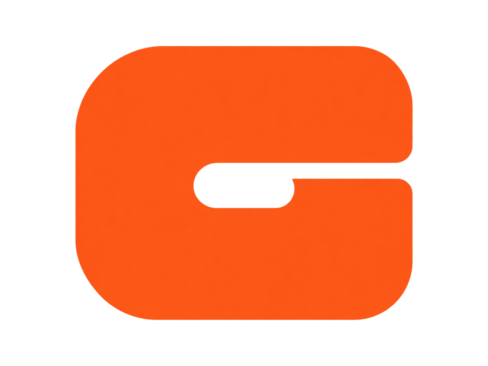
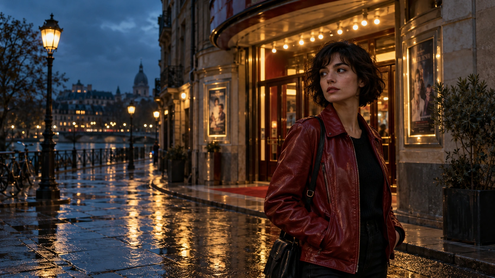
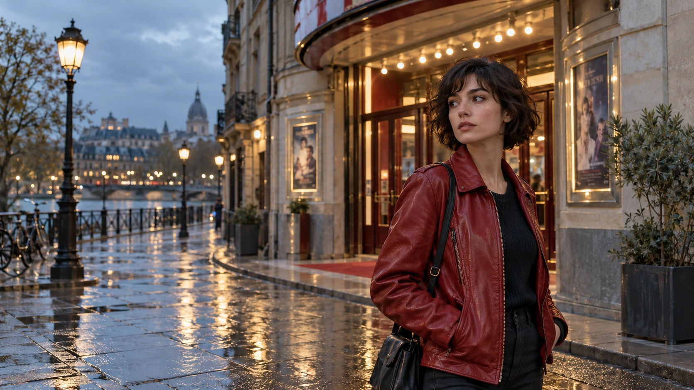
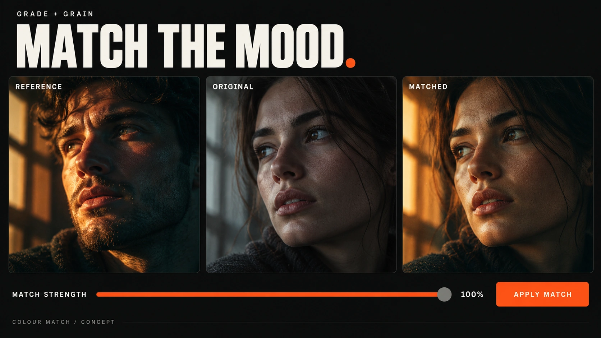
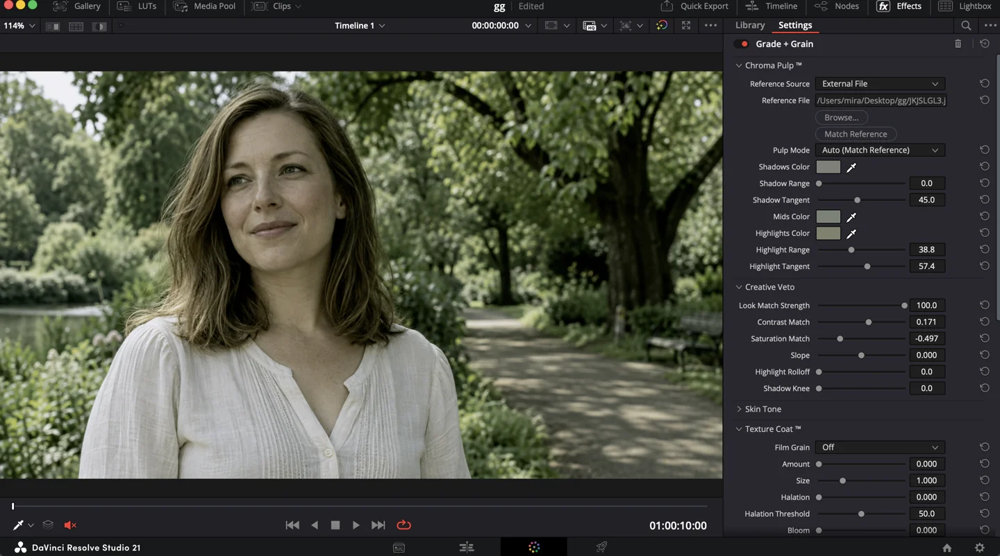

RSIFF | READY FOR CINEMA
Karim Mira · Colour portfolio

GRADE + GRAINJoin the betaColour with intent. Texture with character.
Your creative toolkit, inside DaVinci Resolve.
Selected colour work by Karim Mira · Portfolio films
Karim Mira · Colour portfolio

Karim Mira · Colour portfolio

Karim Mira · Colour portfolio
Selected colour work by Karim Mira. Explore the new cinematic concept frames below.


NeutralCreative gradeAI-generated test frames with illustrative look treatments. Open a look to explore the neutral and creative versions.
Start with a reference.
Finish with your signature.

A closer look at the character.
Illustrative feature concepts.
AI-created feature illustrations. View the actual plugin interface inside DaVinci Resolve ↗.
No new windows, no roundtrips. GRADE + GRAIN runs natively as an OFX node — full reference matching, waveform-aware analysis and film-stock emulation, right inside your color page.
Drag to compare. Use the arrow keys when the slider is selected. AI-generated concept preview; illustrative treatments, not a plugin export.
A blue-hour cinema portrait with amber practical lights, deep blue shadows and natural skin tones. A new AI-generated frame for exploring colour direction.
Drag to compare. Use the arrow keys when the slider is selected. AI-generated concept preview; illustrative treatments, not a plugin export.
Soft Mediterranean daylight, warm linen and muted olive tones. A new AI-generated frame for exploring a quieter colour palette.
Find your texture.
Make it part of your signature.
One signature. Five palettes. Emulsion-inspired G studies.
Reference matching, grading controls and film texture, right where you work. Chroma Pulp™ puts exposure, highlight rolloff and shadow control in your hands.
Join the beta ↗
Monthly, quarterly or annual billing. All prices in USD.
Billed every month.
One month at a time.
Join the BetaBilled every 3 months.
Equivalent to $26.67 per month.
Save $10 every quarter compared with monthly billing.
Join the BetaBilled every year.
Equivalent to $25 per month.
Save $60 every year compared with monthly billing.
Join the BetaJoin the beta tester list for testing invitations and updates.
Enter your email to request a beta invitation and receive testing updates.